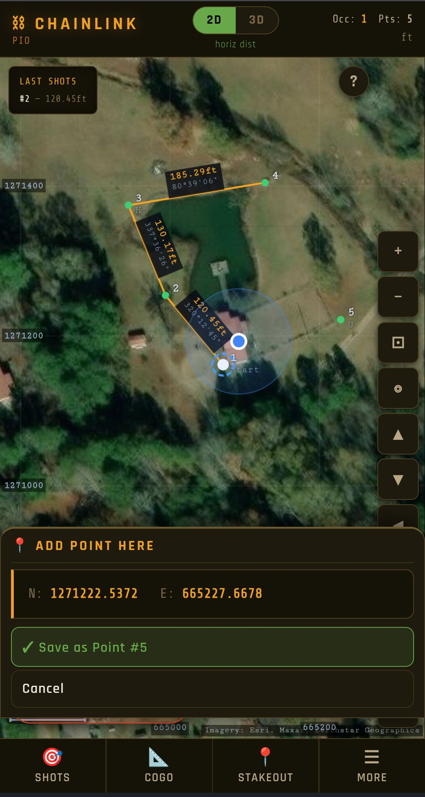

Import your existing points, set up over a known or assumed point, and shoot. ChainLink records your shots and works out coordinates in 2D or full 3D, then runs the COGO — inverse, intersections, resection, traverse adjustment, areas, and stakeout to points, lines, and curves. Works with no signal, with whatever total station you're running, and sends the file back to the office when you're done.
And because it lives on a phone, it can do what a data collector can't: one GPS fix puts your job on real State Plane coordinates, draws your work over live aerial imagery, shows where you're standing, and walks you to any point.
Open the App →
I work on a survey crew. My last outfit ran high-tech gear. Then I moved across the country to support family, and the field tool I was handed at the new job was an HP 48GX — a graphing calculator from the early '90s with survey programs loaded on it, far too antiquated for modern tasks, in my opinion. I had a smartphone in my pocket the whole time, but I couldn't find a single app that would record measurements and run COGO on a phone.
So I built what I wanted: something that runs on the phone already on me and works with no signal.
It's grown well past what I first needed. It works in 2D or full 3D, handles the heavier COGO — resection, intersections, traverse adjustment, areas with curved boundaries — and stakes out points, lines, and curves. It'll reduce two-face shots, average points for tighter control, apply atmospheric and scale corrections, and export to CSV, DXF, LandXML, KML, or a PDF field book for the office. Now it'll even put your work on live aerial imagery from one GPS fix. I hope it's useful for you.
ChainLink is a single self-contained app — nothing to install, no account, and it keeps working with no signal once it's loaded. It turns the angles and distances from the gun into real coordinates, draws them on a plot you can see and edit, and does the layout math.
Whether you've never had a collector, yours just quit in the field, or you're laying out your own project with a borrowed or used gun — it's the same tool, and you don't have to be licensed to use it.
A data collector only knows the numbers you feed it. Your phone also knows where it is on Earth — so ChainLink uses that.
Stand at your starting point and take one GPS fix: the job lands on your state's real coordinate grid, the aerial photo lines up behind your linework, and from then on a blue dot shows where you are on your own survey. Pick any point and the app gives you live distance and direction to walk to it.
Scouting a property? Drop a pin at anything you find — an iron, a gate, a culvert — and it's stored as a point, clearly tagged as GPS-grade so it's never confused with an instrument shot. The precise work still belongs to the gun; the phone gets you there and shows you the whole picture.
Paste a legal description — from a deed search, a title commitment, or a photo of the paper — and ChainLink reads the calls: bearings, distances, curves, even the old units (chains, links, rods, poles, varas, meters). Then it plots the tract on the aerial imagery, right where the land is.
It reads the whole record, not just the perimeter. Carve-outs ("less and except") and easements come in as their own figures, each placed by its own tie courses from the point of beginning — easements drawn at their stated right-of-way width. Net acreage comes out with curves computed as true arcs, not chord shortcuts.
And it's honest software: a carve-out that lands outside its parent tract gets flagged on the plot, not painted over. Sometimes that's a figure waiting to be placed. Sometimes you've just found a defect in the record — the kind of thing a retracement surveyor gets paid to notice.
Then the part no desktop deed program can do: put the phone in your pocket and walk to the corners. Every plotted corner is a live point — stakeout, inverse, and GPS navigation all work on it.
One honest tip: the built-in 📷 camera works offline, but its text reading is rough. Google Lens reads deeds far better — snap the page with Lens, copy the text, and paste it in. A scanner app that makes searchable PDFs (Adobe Scan, Microsoft Lens) works even better for multi-page deeds: the app reads the PDF's text directly.
ChainLink is a web app — open it once and add it to your home screen, then it launches full-screen and runs offline. No store, no download.
No account, no card, nothing to sign up for — open it and it's yours.
Open the App →